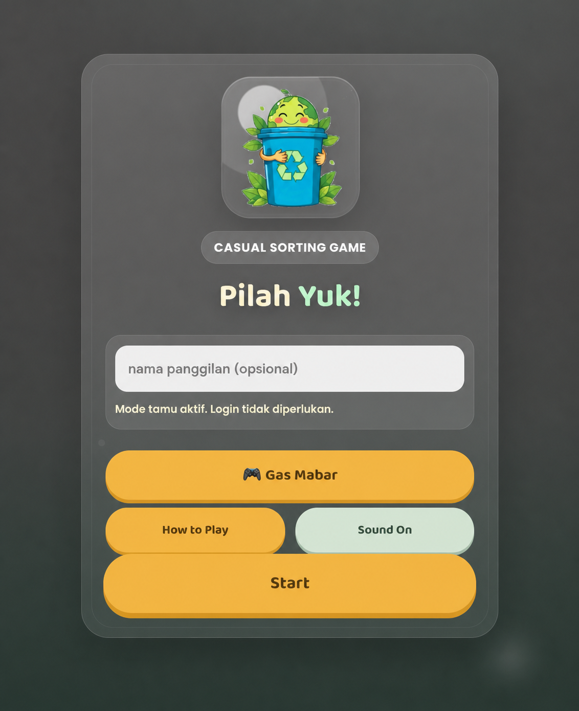

Dosen Pembimbing Lapangan
Ir. Fitri Sulastri, S.T., M.T.
Pembimbing kegiatan KKN Universitas Buana Perjuangan Karawang di Desa Cikampek Kota.
Instagram @fitrisu__ ↗Dokumentasi resmi KKN UBP Cikampek Kota, Universitas Buana Perjuangan Karawang, periode 08 Juli–08 Agustus 2026.
Pembimbing kegiatan KKN Universitas Buana Perjuangan Karawang di Desa Cikampek Kota.
Instagram @fitrisu__ ↗
Media pembelajaran digital tentang jenis sampah, cara memilah, dan konsep 3R yang dilengkapi video, kuis bersertifikat, serta permainan edukatif interaktif.
Website edukasi interaktif yang membantu masyarakat mempelajari pengelolaan sampah melalui materi bergambar, video edukasi, panduan jenis dan cara memilah sampah, konsep 3R, kuis bersertifikat, serta permainan interaktif. Website dapat diakses gratis melalui ponsel, tablet, maupun komputer sebagai media pembelajaran lingkungan bagi siswa, guru, orang tua, dan masyarakat umum.

Sistem monitoring dan pemetaan sampah berbasis web sebagai media kampanye digital pengelolaan TPS/TPA, dilengkapi peta GIS dan kanal laporan warga.
Sistem manajemen berbasis peta yang membantu pengelola mencatat koordinat TPS atau bank sampah sekaligus memantau dan menindaklanjuti laporan warga. Informasi lokasi dan status penanganan disajikan dalam satu dashboard agar pengelolaan sampah desa lebih terstruktur dan mudah dipantau.

Game berbasis browser sebagai media edukasi interaktif untuk mengajarkan warga dan anak-anak cara memilah sampah dengan menyenangkan.
Pemain diminta mengenali jenis sampah lalu menempatkannya ke tempat sampah yang sesuai. Permainan ini dirancang sebagai sarana belajar singkat, ringan, dan mudah dimainkan tanpa perlu login.
Edukasi bagi ibu rumah tangga, remaja, dan warga untuk meningkatkan kesadaran, sikap, serta perilaku peduli lingkungan melalui pengelolaan sampah rumah tangga yang tepat.
Pendampingan untuk meningkatkan keterampilan sumber daya manusia pelaku UMKM agar mampu mengolah sampah menjadi produk bernilai guna dan bernilai ekonomi.
Penyuluhan mengenai penggunaan dan penyimpanan obat yang aman, pemahaman batas penggunaan setelah kemasan dibuka, serta pembuangan limbah obat rumah tangga secara bertanggung jawab.
Pembelajaran interaktif untuk membangun kebiasaan tidak membuang sampah sembarangan dan meningkatkan kepedulian lingkungan sejak usia sekolah dasar.
Pelatihan mengolah limbah anorganik menjadi produk kreatif yang memiliki nilai jual sekaligus membuka peluang usaha bagi masyarakat.
Edukasi keuangan dasar bagi siswa sekolah dasar tentang membedakan kebutuhan dan keinginan, mengelola uang saku, serta membangun kebiasaan menabung.
Psikoedukasi mengenai perilaku menimbun barang, dampaknya terhadap kesehatan dan lingkungan, serta langkah sederhana untuk membangun kebiasaan hidup lebih tertata.
Penyuluhan tentang sumber dan risiko mikroplastik bagi kesehatan serta kebiasaan praktis untuk mengurangi penggunaan plastik dan paparannya sehari-hari.
Sosialisasi hukum lingkungan dan prinsip Analisis Mengenai Dampak Lingkungan untuk meningkatkan pemahaman warga mengenai tanggung jawab pengelolaan sampah.
Pengenalan aturan, tanggung jawab, dan konsekuensi membuang sampah sembarangan melalui materi yang sederhana dan mudah dipahami siswa sekolah dasar.
Pelatihan praktis untuk mencatat pemasukan, pengeluaran, modal, dan keuntungan agar pengelolaan keuangan UMKM daur ulang menjadi lebih tertib.
Pendampingan untuk meningkatkan kemampuan komunikasi, kualitas layanan, dan pengalaman pelanggan pada UMKM berbasis produk daur ulang.
Kegiatan edukatif untuk mengenalkan pemilahan sampah, kebersihan lingkungan, dan kebiasaan bertanggung jawab kepada siswa sejak dini.
Penerapan teknologi mesin pencacah sampah organik untuk mempercepat proses pengolahan dan mendukung kemandirian pengelolaan lingkungan desa.
Sosialisasi dan media digital untuk meningkatkan pemahaman remaja mengenai bentuk bullying, dampaknya, cara mencegah, dan langkah mencari bantuan.
Pembuatan alat pencacah untuk memperkecil ukuran sampah organik sehingga lebih mudah diolah menjadi kompos atau bahan pengolahan lanjutan.
Pembuatan sarana pemilahan sampah berbahan jaring yang ringan dan mudah digunakan untuk mendukung kebiasaan memilah sampah di lingkungan warga.
Pembuatan biopori sebagai solusi sederhana untuk mengolah sampah organik, memperbaiki daya resap tanah, dan membantu mengurangi genangan air.
Gerakan bersama untuk meningkatkan kepedulian terhadap kebersihan masjid dan lingkungan sekitarnya agar tercipta ruang ibadah yang sehat, bersih, dan nyaman.
 Dokumentasi Kegiatan 24 Juli
Dokumentasi Kegiatan 24 Juli.webp) Dokumentasi Kegiatan 24 Juli
Dokumentasi Kegiatan 24 Juli Dokumentasi Kegiatan 24 Juli
Dokumentasi Kegiatan 24 Juli.webp) Dokumentasi Kegiatan 24 Juli
Dokumentasi Kegiatan 24 Juli.webp) Dokumentasi Kegiatan 24 Juli
Dokumentasi Kegiatan 24 Juli Dokumentasi Kegiatan 24 Juli
Dokumentasi Kegiatan 24 Juli.webp) Dokumentasi Kegiatan 24 Juli
Dokumentasi Kegiatan 24 Juli.webp) Dokumentasi Kegiatan 24 Juli
Dokumentasi Kegiatan 24 Juli Dokumentasi Kegiatan 24 Juli
Dokumentasi Kegiatan 24 Juli.webp) Dokumentasi Kegiatan 24 Juli
Dokumentasi Kegiatan 24 Juli.webp) Dokumentasi Kegiatan 24 Juli
Dokumentasi Kegiatan 24 Juli Dokumentasi Kegiatan 24 Juli
Dokumentasi Kegiatan 24 Juli Foto Bersama Warga Cikampek Kota
Foto Bersama Warga Cikampek Kota Foto Bersama Tim KKN
Foto Bersama Tim KKN.webp) Kegiatan Bersama Warga
Kegiatan Bersama Warga.webp) Kunjungan ke SDN Cikampek Kota
Kunjungan ke SDN Cikampek Kota Kegiatan Bersama Siswa
Kegiatan Bersama Siswa.webp) Sosialisasi kepada Masyarakat
Sosialisasi kepada Masyarakat.webp) Kebersamaan Bersama Siswa
Kebersamaan Bersama Siswa Kebersamaan Tim di Posko
Kebersamaan Tim di Posko Persiapan Kegiatan di Posko
Persiapan Kegiatan di Posko Dokumentasi Kegiatan 22 Juli
Dokumentasi Kegiatan 22 Juli Dokumentasi Kegiatan 22 Juli
Dokumentasi Kegiatan 22 Juli.webp) Dokumentasi Kegiatan 22 Juli
Dokumentasi Kegiatan 22 Juli.webp) Dokumentasi Kegiatan 22 Juli
Dokumentasi Kegiatan 22 Juli Dokumentasi Kegiatan 22 Juli
Dokumentasi Kegiatan 22 Juli.webp) Dokumentasi Kegiatan 22 Juli
Dokumentasi Kegiatan 22 Juli Dokumentasi Kegiatan 22 Juli
Dokumentasi Kegiatan 22 Juli.webp) Dokumentasi Kegiatan 22 Juli
Dokumentasi Kegiatan 22 Juli.webp) Dokumentasi Kegiatan 22 Juli
Dokumentasi Kegiatan 22 Juli Dokumentasi Kegiatan 22 Juli
Dokumentasi Kegiatan 22 Juli.webp) Dokumentasi Kegiatan 22 Juli
Dokumentasi Kegiatan 22 Juli.webp) Dokumentasi Kegiatan 22 Juli
Dokumentasi Kegiatan 22 Juli Dokumentasi Kegiatan 22 Juli
Dokumentasi Kegiatan 22 Juli.webp) Dokumentasi Kegiatan 22 Juli
Dokumentasi Kegiatan 22 JuliPihak yang terlibat: Seluruh anggota KKN.
Pihak yang terlibat: Ketua, Koordinator Program, Sekretaris, PDD, seluruh anggota KKN, dan warga desa.
Pihak yang terlibat: Seluruh anggota KKN dan perangkat desa.
Pihak yang terlibat: Perwakilan semua divisi dan perangkat BUMDes.
Pihak yang terlibat: Divisi Humas, Koordinator Program, seluruh anggota KKN, Acara, Bendahara, dan Putri Solihatun.
Pihak yang terlibat: Divisi Humas, Koordinator Program, seluruh anggota KKN, Logistik, dan PDD.
Pihak yang terlibat: Dziqro Mulya Sapitri, perwakilan kelompok KKN, Logistik, Humas, PDD, Ketua, Sekretaris, dan Acara.
Pihak yang terlibat: Seluruh anggota KKN.
Pihak yang terlibat: Difa Putri Nalia, Putri Sholihatun Wahidah, Nurhaliza Putri, Auliya Rahmawati, Pandu Alamsyah, dan seluruh anggota KKN.
Pihak yang terlibat: Anasta Nayna Nilangga, Alexander Ekklesia Twobagas Chrisly, Regita Cahyani, Zahra Azqiyarahma, Dhika Fadilah, dan seluruh anggota KKN.
Pihak yang terlibat: Ketua, Koordinator Program, Sekretaris, Bendahara, Humas & PDD, serta Muhamad Dafarul Ilmi dan Fika Alif Wahyudi.
Pihak yang terlibat: Seluruh anggota KKN dan masyarakat Desa Cikampek Kota.
Pihak yang terlibat: Apri Isdianto, Marsela Indah Sari, Choirul Anwar, serta masyarakat dan siswa sekolah dasar.
Pihak yang terlibat: Seluruh anggota KKN.
Pihak yang terlibat: Seluruh anggota KKN, BPH, dan perwakilan setiap divisi.
Pihak yang terlibat: Seluruh anggota KKN.
Pihak yang terlibat: Asep Gunawan Febriana, Fika Alif Wahyudi, Fajar Arief Rezky, Muhammad Hafidz Fikri, Muhamad Dafarul Ilmi, Mochamad Rafly Hasby Rayhan, Zahrah Annisa Ramadhani, serta seluruh anggota KKN.
Pihak yang terlibat: Seluruh anggota KKN.
Pihak yang terlibat: BPH, Logistik, Konsumsi, PDD, Acara, dan Humas.
Pihak yang terlibat: Seluruh anggota KKN.
Pihak yang terlibat: Seluruh anggota KKN.
Pihak yang terlibat: Seluruh anggota KKN.
Catatan kegiatan harian KKN Cikampek Kota yang telah terdokumentasi.
BACA 22 HARI KEGIATAN →Ringkasan 22 program kerja selesai beserta pembuat dan detail kegiatannya.
LIHAT DETAIL PROKER →Foto kegiatan terpilah berdasarkan masyarakat, sekolah, program kerja, dan posko.
BUKA GALERI →Tombol unduh akan diaktifkan setelah dokumen laporan akhir resmi diunggah.
MENUNGGU FILE RESMILaporkan titik sampah dan kondisi TPS melalui Peta Titik TPS.
 SCAN
SCANProgram telah dilaksanakan dan berstatus selesai. Dokumentasi terkait dapat dilihat pada arsip galeri kegiatan.
Materi dan laporan khusus akan ditampilkan ketika file resmi program tersedia.
Masuk menggunakan akun admin Supabase.
Aktifkan mode hapus, lalu klik foto yang ingin dihapus pada slider.
Upload atau ganti laporan PDF untuk setiap program kerja.